/Yan's Tour Diary/
Anonymous Sat 15 Jan 2022 13:30:34 No.116783066
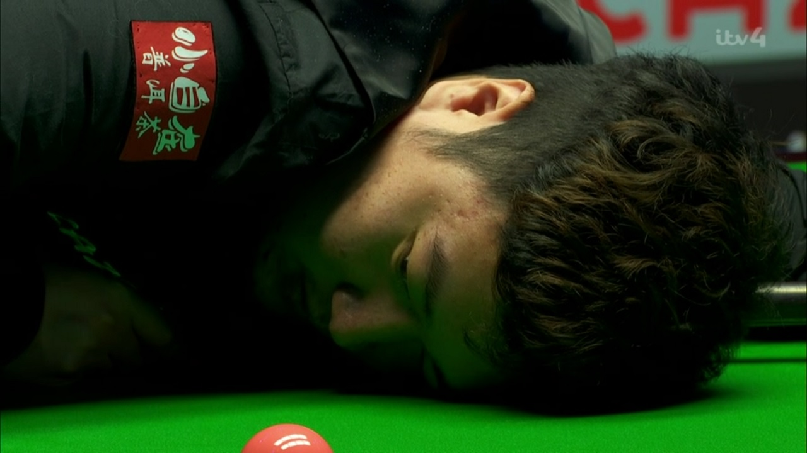
>day 28
>the skeleton man eat the last of my Honey Nut, even though I write "BINGTAO" on box. when I ask him about it, he just smile.
>go up to my Lego room and see that my 4000 piece Lego rollercoaster is destroy. I know it was him, but no prove it.
>try to find Coochie but nowhere to be found. as if Cat just disappear. later I see clump of fur on Rob pants.
>each day I become more misery. Ava as well. Rob only smile.
>the skeleton man eat the last of my Honey Nut, even though I write "BINGTAO" on box. when I ask him about it, he just smile.
>go up to my Lego room and see that my 4000 piece Lego rollercoaster is destroy. I know it was him, but no prove it.
>try to find Coochie but nowhere to be found. as if Cat just disappear. later I see clump of fur on Rob pants.
>each day I become more misery. Ava as well. Rob only smile.
Anonymous Sat 15 Jan 2022 20:35:02 No.116794395
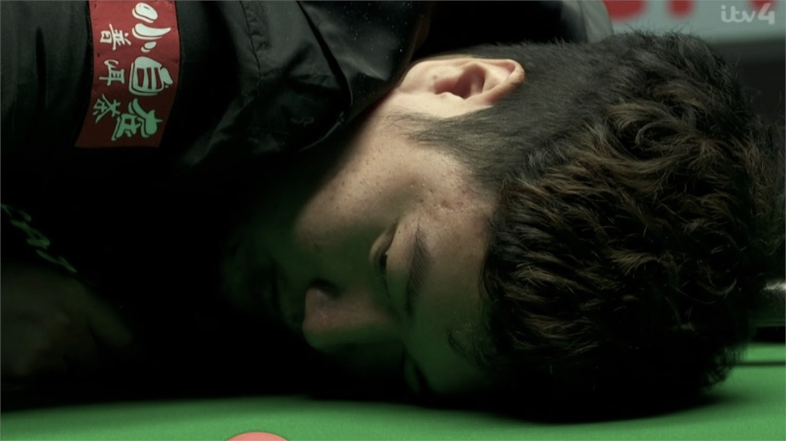
>day 29
>In evening, we hold candle vigil for Coochie. it go so well but then Rob come out and dance in front of us. such rude dancing. Ava scream and go tears and run inside. Rob lean to me for elbow bump.
>Mr Rob wake me up at 3am. says want to go petrol station. I say no have game in morning. he jump on bed and hit my head with pillow, again and again. he laugh so much but I feel like cry.
>In evening, we hold candle vigil for Coochie. it go so well but then Rob come out and dance in front of us. such rude dancing. Ava scream and go tears and run inside. Rob lean to me for elbow bump.
>Mr Rob wake me up at 3am. says want to go petrol station. I say no have game in morning. he jump on bed and hit my head with pillow, again and again. he laugh so much but I feel like cry.
Anonymous Sun 16 Jan 2022 14:06:19 No.116831802
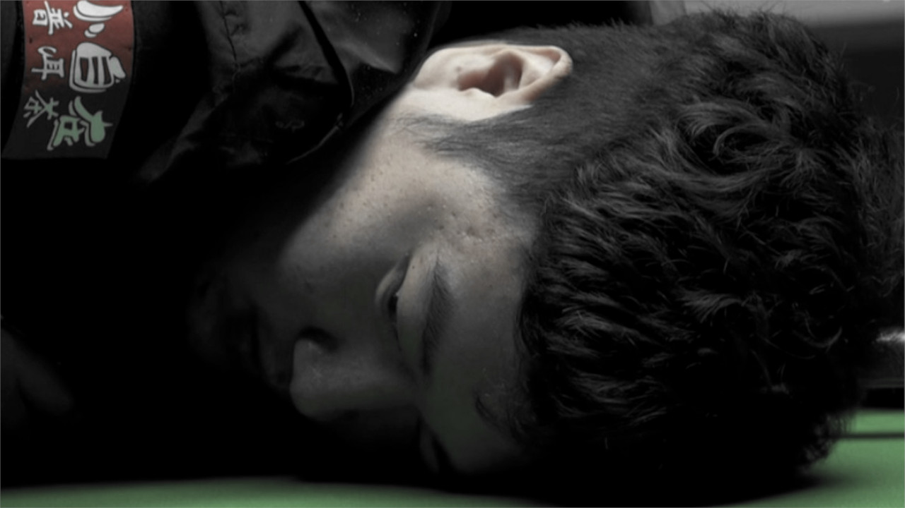
>day 30
>big game against Mark William. I full of sick feeling. Rob make Rob Special Omelette in kitchen. it uncooked and full of egg shell. When I don't eat he scream and roll on floor. Ava hide in office all morning and give no kiss goodbye.
>I drive car and Rob sing like banshee whole way. He say he love every song and get many words wrong. I ask for volume down but he instead put volume up.
>park at Ally Pally and Rob say he want to check cue case. I try tell no but he take it and suddenly he throw my cue like spear. it go so far and hit van. man shout at me with such anger. I turn to Rob but he not there.
>big game against Mark William. I full of sick feeling. Rob make Rob Special Omelette in kitchen. it uncooked and full of egg shell. When I don't eat he scream and roll on floor. Ava hide in office all morning and give no kiss goodbye.
>I drive car and Rob sing like banshee whole way. He say he love every song and get many words wrong. I ask for volume down but he instead put volume up.
>park at Ally Pally and Rob say he want to check cue case. I try tell no but he take it and suddenly he throw my cue like spear. it go so far and hit van. man shout at me with such anger. I turn to Rob but he not there.
Anonymous Sun 16 Jan 2022 20:30:34 No.116844603
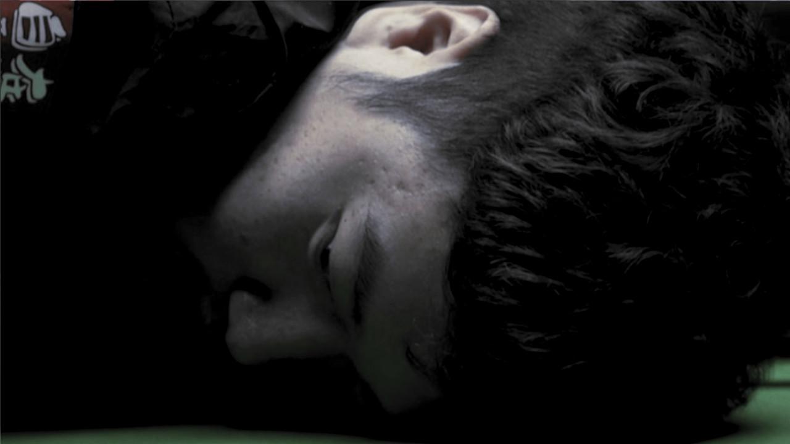
>day 30 (continued)
>my cue so damaged, the tip more cracks than Rob face. how am I to play with this? lucky my friend Ding let borrow his cue, say he don't need it no more. I go to him to pick up cue and hurry back to Ally Pally.
>match start soon and I so exhausted. see Rob in arena, he has mic and entertain crowd. he act as if nothing happen. everyone laugh and smile with him, the don't know of misery he cause.
>I try best to play but feel so bad. Mr William beat me. want to go home but Mr Rob take car key from pocket, he tell me to stay until he finish work. I wait in player lounge for many hour. after evening session finish I look for him but told he gone. I go to car park and car is gone. Mr Rob trick me and leave me at venue.
>my cue so damaged, the tip more cracks than Rob face. how am I to play with this? lucky my friend Ding let borrow his cue, say he don't need it no more. I go to him to pick up cue and hurry back to Ally Pally.
>match start soon and I so exhausted. see Rob in arena, he has mic and entertain crowd. he act as if nothing happen. everyone laugh and smile with him, the don't know of misery he cause.
>I try best to play but feel so bad. Mr William beat me. want to go home but Mr Rob take car key from pocket, he tell me to stay until he finish work. I wait in player lounge for many hour. after evening session finish I look for him but told he gone. I go to car park and car is gone. Mr Rob trick me and leave me at venue.
Anonymous Tue 18 Jan 2022 15:40:56 No.116907772
 >day 31
>day 31
>no know what to do. try call Ava, but no answer for longest time. when finally answer, it Mr Rob voice on phone. he say Ava not available right now. I hang up, so worry and scare. it so late and I so tired, I have to get rest.
>I find warm spot in janitor closet. room smell of beer and piss, maybe Mr Virgo go here. there flies all around. I swat at them with hand and get no sleep all night. when sun rise I go out and find taxi. '147 Deano Way' I tell driver.
>when arrive I run inside. look for Ava but nowhere to be found. I search office and see faint red stain in middle of plush carpet. Rob appear in doorway behind me with big grin. when ask about stain say he spill Ribena.
>day 31>no know what to do. try call Ava, but no answer for longest time. when finally answer, it Mr Rob voice on phone. he say Ava not available right now. I hang up, so worry and scare. it so late and I so tired, I have to get rest.
>I find warm spot in janitor closet. room smell of beer and piss, maybe Mr Virgo go here. there flies all around. I swat at them with hand and get no sleep all night. when sun rise I go out and find taxi. '147 Deano Way' I tell driver.
>when arrive I run inside. look for Ava but nowhere to be found. I search office and see faint red stain in middle of plush carpet. Rob appear in doorway behind me with big grin. when ask about stain say he spill Ribena.
Anonymous Fri 21 Jan 2022 18:54:32 No.116983034
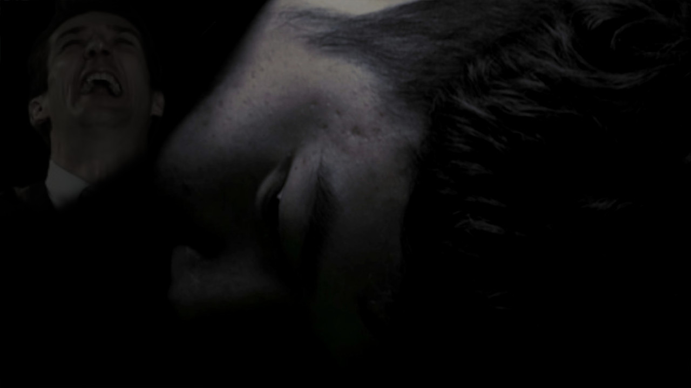
>day 32
>still no sign Ava. I search all over, but like she just disappear. I ask Mr Rob what he know but he just talk about carpet. Always talk carpet and run hand through carpet. Even police no help, say they find no leads. I tell them she no wear a lead, she people.
>try call friend and family, but every number in phone wrong. call Ava sister, I get post office. call Ava friend, I get petrol station. rude man answer phone, he yell at me and say stop calling. I so confused. man behind camera laugh, he say this epic content.
>can't believe it. first lose Coochie now Ava disappear. all time I feel like cry. all of sudden, Mr Rob run through door and leap at me like big dog. his sharp elbow hit my chest hard. I fall back and in such pain. now Rob face in my face, he laugh and laugh. no have strength to push him off. I think rib crack or bruised. it hurt to breathe.
>still no sign Ava. I search all over, but like she just disappear. I ask Mr Rob what he know but he just talk about carpet. Always talk carpet and run hand through carpet. Even police no help, say they find no leads. I tell them she no wear a lead, she people.
>try call friend and family, but every number in phone wrong. call Ava sister, I get post office. call Ava friend, I get petrol station. rude man answer phone, he yell at me and say stop calling. I so confused. man behind camera laugh, he say this epic content.
>can't believe it. first lose Coochie now Ava disappear. all time I feel like cry. all of sudden, Mr Rob run through door and leap at me like big dog. his sharp elbow hit my chest hard. I fall back and in such pain. now Rob face in my face, he laugh and laugh. no have strength to push him off. I think rib crack or bruised. it hurt to breathe.
Some time later...
Anonymous Sat 16 Apr 2022 19:55:22 No.119447443
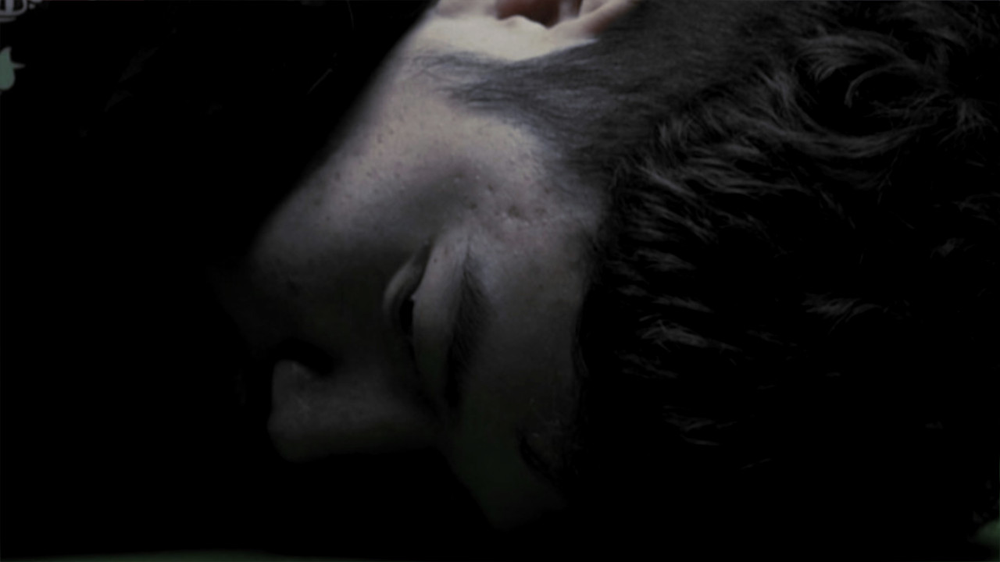
>world championship press day
>my suit arrive at last, nervous to try it on. I have no Ava any more to help choose clothes so Mr Rob pick for me. I open package and see furry green suit, it look like plush carpet and feel disgusting to touch. I try it on and it fit no good.
>so excite to go to Crucible, this feel like fresh start after awful year. base Tong will be there, I feel I can confide in him about sorrowful time. but when get there, Mr Rob jump out from behind bush and pin me to ground with long limbs. he laugh as he press fingers into green suit and pretend to walk on me, after long time I finally break free.
>suit now covered in dirt and greasy finger print, when I get inside venue everyone waiting on me, all shake their head and disappoint. I stand behind Tong for photo, his suit clean and good, he smile like no care in world. just before photo taken, Mr Rob peek out from behind wall and stare at me. he stare at me for long time. I ask Tong if he see him, but Tong say no.
>my suit arrive at last, nervous to try it on. I have no Ava any more to help choose clothes so Mr Rob pick for me. I open package and see furry green suit, it look like plush carpet and feel disgusting to touch. I try it on and it fit no good.
>so excite to go to Crucible, this feel like fresh start after awful year. base Tong will be there, I feel I can confide in him about sorrowful time. but when get there, Mr Rob jump out from behind bush and pin me to ground with long limbs. he laugh as he press fingers into green suit and pretend to walk on me, after long time I finally break free.
>suit now covered in dirt and greasy finger print, when I get inside venue everyone waiting on me, all shake their head and disappoint. I stand behind Tong for photo, his suit clean and good, he smile like no care in world. just before photo taken, Mr Rob peek out from behind wall and stare at me. he stare at me for long time. I ask Tong if he see him, but Tong say no.
Anonymous Sun 17 Apr 2022 20:00:09 No.119485683
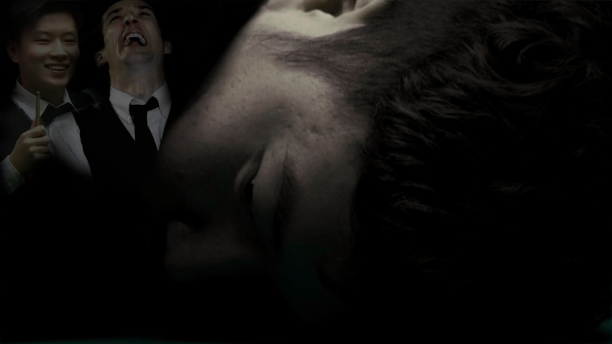
>world championship day 1
>I wake early, long day practice ahead. but first, I must dispose of awful green suit. it bring me nothing but bad time and is corrupted by Mr Rob. I go out to small garden and start fire on grill. suit burn slowly and stench bring tear to eye. as suit disintegrate, I hear faint voice echo from fire. it say 9-fucking-nil, 9-fucking-nil over and over. voice sound so familiar...
>no table in house so must travel to Victoria academy for practice. but when get there, they no let me in. they say I embarrass them yesterday with disgusting suit. I embarrass China. I plead with fren Tong through window but he want nothing to do with me. when I turn to leave, I see Mr Rob inside with Tong and other frens, laughing and having great time.
>when I get home feel so lonely. Ava and I buy big expensive deano house to build life together, but now I all alone. it feel like whole life change when Mr Rob first visit, as if visit put curse on everything. I turn on TV and see Mr Selby winning match. Mr Selby also go through many bad time, he also open home to Mr Rob. perhap Mr Selby can help me.
>I wake early, long day practice ahead. but first, I must dispose of awful green suit. it bring me nothing but bad time and is corrupted by Mr Rob. I go out to small garden and start fire on grill. suit burn slowly and stench bring tear to eye. as suit disintegrate, I hear faint voice echo from fire. it say 9-fucking-nil, 9-fucking-nil over and over. voice sound so familiar...
>no table in house so must travel to Victoria academy for practice. but when get there, they no let me in. they say I embarrass them yesterday with disgusting suit. I embarrass China. I plead with fren Tong through window but he want nothing to do with me. when I turn to leave, I see Mr Rob inside with Tong and other frens, laughing and having great time.
>when I get home feel so lonely. Ava and I buy big expensive deano house to build life together, but now I all alone. it feel like whole life change when Mr Rob first visit, as if visit put curse on everything. I turn on TV and see Mr Selby winning match. Mr Selby also go through many bad time, he also open home to Mr Rob. perhap Mr Selby can help me.
Anonymous Mon 18 Apr 2022 20:55:34 No.119516037
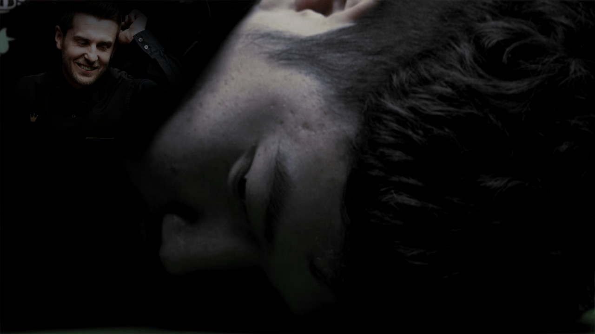
>world championship day 2
>first thing in morning I call Mr Selby for advice. he happy to visit me and give support. what a good guy! when he arrive he give me big basket of lemons as gift. he say I could put lemon with my fish and chip haha. we sit down to talk, but when I mention Mr Rob name Selby whole mood change. his face go pale like dead man, his entire body twitch like Ding eyelid. 'c-can you squeeze me some l-lemon juice?' he ask quietly.
>I go to kitchen and squeeze lemon with all my might. I squeeze and squeeze until entire glass is full, then I hand it to Mr Selby. he gulp it down like Mr Milkin drink cider. after few minute he look much better, he say his smile and zest is restore. Selby look me straight in eye, 'just please don't say his name...' he say. I nod. Mr Selby give me business card of his therapist, he highly recommend him and say I could make appointment.
>after Mr Selby leave I make call to therapist. I speak to receptionist about problem, she very nice and supportive. she give me an online appointment with doctor for tomorrow evening. for first time in long time I feel good. I decide to try lemon for myself, after all it work so well for Mr Selby! but when I squeeze, lemon juice shoot in my eye and hurt so bad, my eyes full of cry. when I go to sink, I step on Lego piece and fall to floor. I roll in agony for long time. good thing Mr Rob not here to see this.
>first thing in morning I call Mr Selby for advice. he happy to visit me and give support. what a good guy! when he arrive he give me big basket of lemons as gift. he say I could put lemon with my fish and chip haha. we sit down to talk, but when I mention Mr Rob name Selby whole mood change. his face go pale like dead man, his entire body twitch like Ding eyelid. 'c-can you squeeze me some l-lemon juice?' he ask quietly.
>I go to kitchen and squeeze lemon with all my might. I squeeze and squeeze until entire glass is full, then I hand it to Mr Selby. he gulp it down like Mr Milkin drink cider. after few minute he look much better, he say his smile and zest is restore. Selby look me straight in eye, 'just please don't say his name...' he say. I nod. Mr Selby give me business card of his therapist, he highly recommend him and say I could make appointment.
>after Mr Selby leave I make call to therapist. I speak to receptionist about problem, she very nice and supportive. she give me an online appointment with doctor for tomorrow evening. for first time in long time I feel good. I decide to try lemon for myself, after all it work so well for Mr Selby! but when I squeeze, lemon juice shoot in my eye and hurt so bad, my eyes full of cry. when I go to sink, I step on Lego piece and fall to floor. I roll in agony for long time. good thing Mr Rob not here to see this.
Anonymous Tue 19 Apr 2022 19:42:34 No.119537307
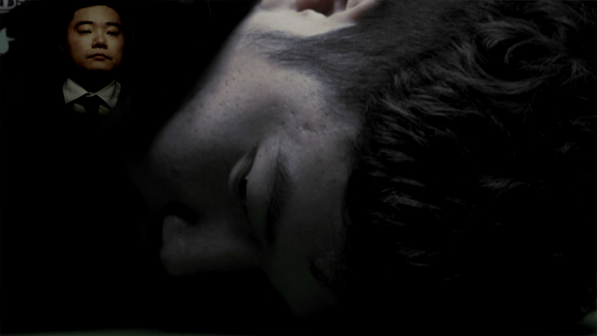
>world championship day 3
>today my eye still so sore from lemon and I have bandage around bad foot. I have game tomorrow against Mr Wakelin but no place to practice. not welcome with base frens at Victoria Academy, and don't want to practice at Crucible in case run into evil Mr Rob. I think and think until I finally remember: it Ding year. I hop in car and slam foot down on pedal, it hurt so bad but I must reach Ding Academy.
>when get there in afternoon, Mr Ding and his students practice. they practice with such determination. this feel like good place for me. to my surprise, Mr Ding come over and greet me, he happy to see me. he such good man, but I struggle to look him in eye because eye still so sore from juice. Mr Ding notice my eye twitching and think I make fun of him. 'you mock Mr Ding's twitch?' his students say. I try explain no and tell them that I zested myself, but they no believe. they grab me and throw me out to the curb.
>I can't believe this happen. now I got no place to play and no frens. 2022 suppose to be Year Of Tiger, but this tiger wounded. I drive home so lonely and sad, foot hurt entire time. when get home, I look at clock and realise appointment with therapist very soon. I sit down in Ada old office and position phone on desk. at 5pm, it ring...
>today my eye still so sore from lemon and I have bandage around bad foot. I have game tomorrow against Mr Wakelin but no place to practice. not welcome with base frens at Victoria Academy, and don't want to practice at Crucible in case run into evil Mr Rob. I think and think until I finally remember: it Ding year. I hop in car and slam foot down on pedal, it hurt so bad but I must reach Ding Academy.
>when get there in afternoon, Mr Ding and his students practice. they practice with such determination. this feel like good place for me. to my surprise, Mr Ding come over and greet me, he happy to see me. he such good man, but I struggle to look him in eye because eye still so sore from juice. Mr Ding notice my eye twitching and think I make fun of him. 'you mock Mr Ding's twitch?' his students say. I try explain no and tell them that I zested myself, but they no believe. they grab me and throw me out to the curb.
>I can't believe this happen. now I got no place to play and no frens. 2022 suppose to be Year Of Tiger, but this tiger wounded. I drive home so lonely and sad, foot hurt entire time. when get home, I look at clock and realise appointment with therapist very soon. I sit down in Ada old office and position phone on desk. at 5pm, it ring...
Anonymous Wed 20 Apr 2022 20:34:58 No.119564794
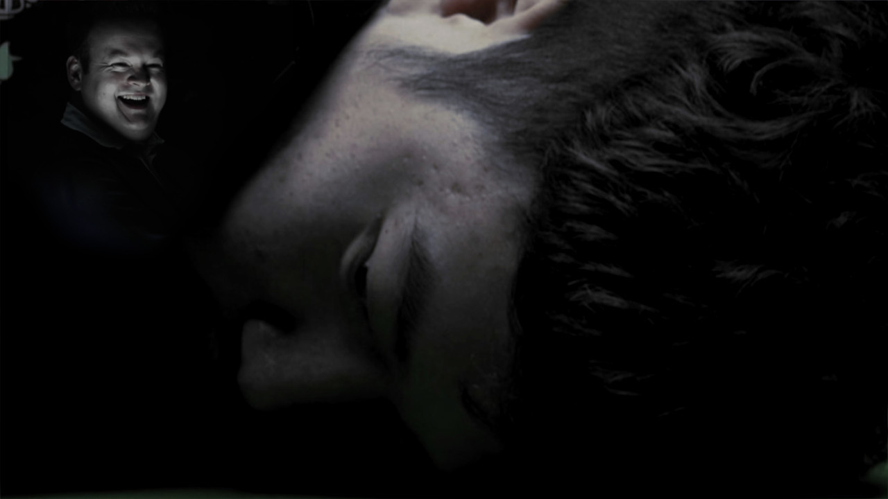
>world championship day 4
>when wake up my body so heavy and weak. feel like I had very disturbing dream, but can't remember detail clearly. when I look at clock I see it 8am, oh no - my first match in just 2 hour! I quickly get ready and drive to Crucible. arrive just in time for match. referee Brendan tap watch impatiently. can't believe first match about to start, I no get practice for weeks and so hungry. I feel so bad but somehow manage to take session 5-4.
>as soon as session end I rush to cafeteria. I so fast, I even beat Mr Shaun and Mr Ham to front of line. I hear them grumble behind back. as I about to sit down with food, I see Mr Hendry beckon me. Legend player want to speak to me! I go over to him and he ask me about match and season. when I explain problems, he call me soft pussy and tell me to stop complaints. he tell me to be like tiger. I think I know what he mean.
>when get back to table, my food gone. I look around and see Mr Shaun with enough plate for 10 people. he steal my food and feast like pig. it no matter - I am like tiger. I head to practice room and work so hard. work and work until evening. when final session begin, I play so awesome. I make many big break and lots of century. Mr Wakelin stand no chance. so happy to reach Round 2, but next I must face the lemon man: Mr Selby.
>when wake up my body so heavy and weak. feel like I had very disturbing dream, but can't remember detail clearly. when I look at clock I see it 8am, oh no - my first match in just 2 hour! I quickly get ready and drive to Crucible. arrive just in time for match. referee Brendan tap watch impatiently. can't believe first match about to start, I no get practice for weeks and so hungry. I feel so bad but somehow manage to take session 5-4.
>as soon as session end I rush to cafeteria. I so fast, I even beat Mr Shaun and Mr Ham to front of line. I hear them grumble behind back. as I about to sit down with food, I see Mr Hendry beckon me. Legend player want to speak to me! I go over to him and he ask me about match and season. when I explain problems, he call me soft pussy and tell me to stop complaints. he tell me to be like tiger. I think I know what he mean.
>when get back to table, my food gone. I look around and see Mr Shaun with enough plate for 10 people. he steal my food and feast like pig. it no matter - I am like tiger. I head to practice room and work so hard. work and work until evening. when final session begin, I play so awesome. I make many big break and lots of century. Mr Wakelin stand no chance. so happy to reach Round 2, but next I must face the lemon man: Mr Selby.
Anonymous Fri 22 Apr 2022 20:46:08 No.119621926
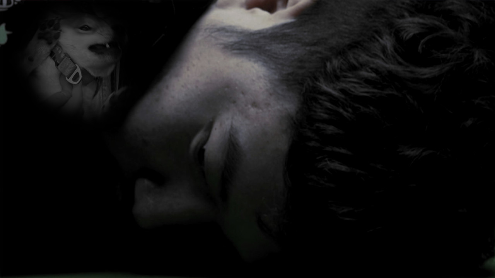
>world championship day 6
>day before match against Mr Selby. I play so well in first round but worry I will get zested. the pain I felt before when lemon juice hit eye, never want feel that again. all of sudden, I get phone call. it fren Tong! I so happy to hear from him, thought he still mad at me. he say he want to use Ada study for trophy storage. I so sad, how he ask something so cruel. this is not the fren I once know. this probably Mr Rob influence.
>maybe some fresh air help mood. it nice day, so decide to go out to park with my best friend, doggie Deng (means light). we have good time running and playing, she so much fun. I pick her up for photo, but she suddenly start squirming in my arm and woof like crazy, as if she frightened. try calm her down but nothing work, she so distress and have fear of God in eye. we end up go home. I wonder what it is she saw.
>when home Deng hide under sofa and refuse to come out. I so sad that beloved doggie now ruined, I guess this why father always say not to play with food. I have big game tomorrow, so decide to go sleep early. I change into jimjams and go to bathroom. when turn on light, I see message on mirror wrote in red. like something from horror movie. it say 'LOOK IN THE ATTIC YAN'.
>day before match against Mr Selby. I play so well in first round but worry I will get zested. the pain I felt before when lemon juice hit eye, never want feel that again. all of sudden, I get phone call. it fren Tong! I so happy to hear from him, thought he still mad at me. he say he want to use Ada study for trophy storage. I so sad, how he ask something so cruel. this is not the fren I once know. this probably Mr Rob influence.
>maybe some fresh air help mood. it nice day, so decide to go out to park with my best friend, doggie Deng (means light). we have good time running and playing, she so much fun. I pick her up for photo, but she suddenly start squirming in my arm and woof like crazy, as if she frightened. try calm her down but nothing work, she so distress and have fear of God in eye. we end up go home. I wonder what it is she saw.
>when home Deng hide under sofa and refuse to come out. I so sad that beloved doggie now ruined, I guess this why father always say not to play with food. I have big game tomorrow, so decide to go sleep early. I change into jimjams and go to bathroom. when turn on light, I see message on mirror wrote in red. like something from horror movie. it say 'LOOK IN THE ATTIC YAN'.
Anonymous Sat 23 Apr 2022 20:48:24 No.119657360
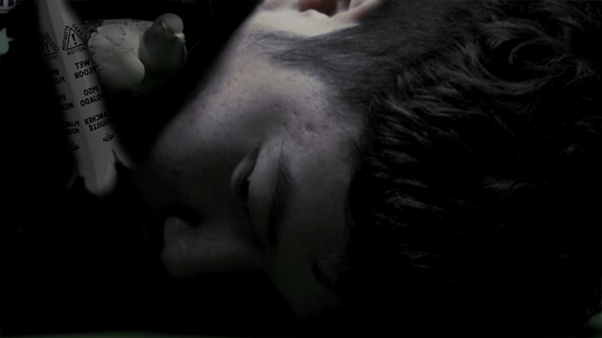
>world championship day 6
>no get much sleep last night, can't stop thinking of what might be in attic. I scare but also curious. when go downstairs I see that Deng still under sofa. she stare at wall and has no joy. wish I could stay with her, but I have to go to Cruce for big game against Mr Selby. I pick up lucky tiger plushie that Ada give me and head out.
>when arrive at Cruce I head to my room. on way, I see Mr Rob lurk in corridor. he look suspicious. all of sudden, I slip on wet floor and have terrible fall. land in puddle that reek of piss. Mr Rob burst into laugh and reveal wet floor sign he hide, yellow sign shape like banana. He say Mr William had little accident after drink too much. my clothes damp and stinky, lucky tiger in hand also ruin.
>no time to change clothe or shower, it time for match! when Mr Rob announce me, he make rude comment about my hygiene to crowd. they laugh and laugh. Mr Selby look with disgust when I sit next to him, his face like he suck on one thousand lemon.
>during first session, pigeon fly in to arena and right next to me. it look at me with deep and soulful eye. pigeon begin speak to me in woman voice. it sound like Ada, a voice so warm and beautiful. she say she can tell me Mr Rob secret, but then before she can tell me, Mr Selby return to arena and pigeon fly away.
>when session end, I look around for pigeon. I must find out the secret. someone tell me it was delivered to commentary box. when get there, it just Mr Virgo in booth. there empty plate in front of him and he look sheepish. suddenly he belch and cloud of feathers spray out of mouth.
>no get much sleep last night, can't stop thinking of what might be in attic. I scare but also curious. when go downstairs I see that Deng still under sofa. she stare at wall and has no joy. wish I could stay with her, but I have to go to Cruce for big game against Mr Selby. I pick up lucky tiger plushie that Ada give me and head out.
>when arrive at Cruce I head to my room. on way, I see Mr Rob lurk in corridor. he look suspicious. all of sudden, I slip on wet floor and have terrible fall. land in puddle that reek of piss. Mr Rob burst into laugh and reveal wet floor sign he hide, yellow sign shape like banana. He say Mr William had little accident after drink too much. my clothes damp and stinky, lucky tiger in hand also ruin.
>no time to change clothe or shower, it time for match! when Mr Rob announce me, he make rude comment about my hygiene to crowd. they laugh and laugh. Mr Selby look with disgust when I sit next to him, his face like he suck on one thousand lemon.
>during first session, pigeon fly in to arena and right next to me. it look at me with deep and soulful eye. pigeon begin speak to me in woman voice. it sound like Ada, a voice so warm and beautiful. she say she can tell me Mr Rob secret, but then before she can tell me, Mr Selby return to arena and pigeon fly away.
>when session end, I look around for pigeon. I must find out the secret. someone tell me it was delivered to commentary box. when get there, it just Mr Virgo in booth. there empty plate in front of him and he look sheepish. suddenly he belch and cloud of feathers spray out of mouth.
Anonymous Sun 24 Apr 2022 21:37:35 No.119707470
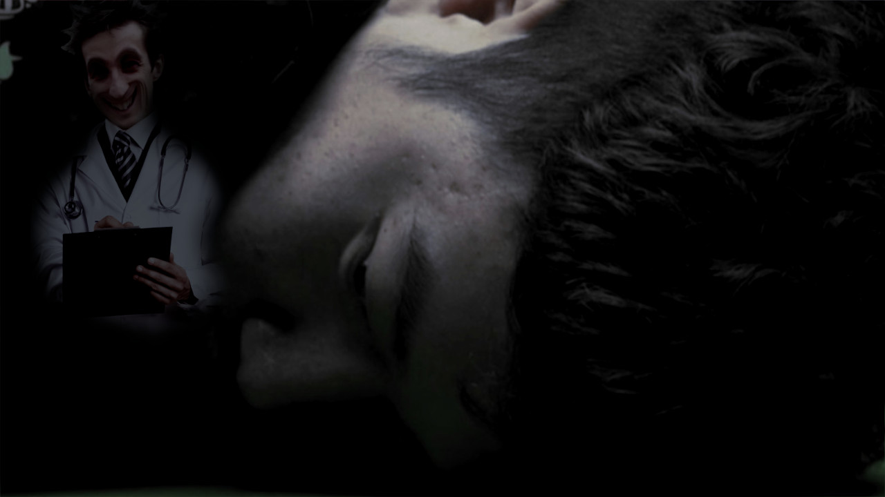
>world championship day 7
>big day ahead, I play two session against Mr Selby for place in quarter final. I go to Cruce early, no want to be late again. when get to dressing room, I hear Mr Selby in room next door. he shouting at staff about lemons. he angry that his room supply with no lemons, say he need them for lemon shave. when see him his face unshaved and scruffy, he look so depress.
>during match I play so well, like true tiger. I do my best to make China proud of me again. in evening, we have very long frame, Mr Selby try so hard to torture, but I strong and resist. we go for piss break but Mr Selby no head to toilet, instead I see him in room with Mrs Vicky. she spray him with something, make his face golden like piece of toast. when she see me looking, she slam door.
>when go back out, I take remaining frames and win match. can't believe it, I play my best and feel so good! when time for interview I go to media room. I see Mr Rob there and suddenly feel sick. I think he must be planning something, but instead he interview as normal. when it done and the others leave, Mr Rob quickly put on white coat. he back me into corner, his face right up to my face. I try not to look into his dark and empty eyes. 'so Yan' he say, 'when is our next session?'
>big day ahead, I play two session against Mr Selby for place in quarter final. I go to Cruce early, no want to be late again. when get to dressing room, I hear Mr Selby in room next door. he shouting at staff about lemons. he angry that his room supply with no lemons, say he need them for lemon shave. when see him his face unshaved and scruffy, he look so depress.
>during match I play so well, like true tiger. I do my best to make China proud of me again. in evening, we have very long frame, Mr Selby try so hard to torture, but I strong and resist. we go for piss break but Mr Selby no head to toilet, instead I see him in room with Mrs Vicky. she spray him with something, make his face golden like piece of toast. when she see me looking, she slam door.
>when go back out, I take remaining frames and win match. can't believe it, I play my best and feel so good! when time for interview I go to media room. I see Mr Rob there and suddenly feel sick. I think he must be planning something, but instead he interview as normal. when it done and the others leave, Mr Rob quickly put on white coat. he back me into corner, his face right up to my face. I try not to look into his dark and empty eyes. 'so Yan' he say, 'when is our next session?'
Anonymous Tue 26 Apr 2022 21:29:03 No.119759945
>world championship day 8
>'so Yan, when is our next session?' as soon as Mr Rob say this, the memory come flooding back. I remember phone call, I remember his laughter. Mr Rob still so close to me, his face just few inches away from mine. for months I suffer so much torment and cruelty from this man. the feeling all hurt so bad... but I stronger now. tonight, I winner - tonight, I brave tiger.
>I take deep breath and stare into his eyes, those awful eyes. he flinch and back away. all of sudden, he look scared. all the wrinkle on his face look the creases in Mr Murphy tummy. I step forward and brush past him. I leave room without even look back once. I no have to fear that man any more.
>when get home, it very late. so tired, but I feel better than have felt for long time. I can face any hardship and stand up to the evil Mr Rob. then I remember message on mirror. it say to go to attic, maybe there something I need to see up there? feeling brave like tiger, I grab flashlight and start climb ladder to attic.
>when I reach attic, it so dusty and dark. not been up here in long time. I turn on flashlight and look around. the place full of boxes and old junk. suddenly notice shoe prints on floor, heading to far end of attic. they look recent. I slowly follow the prints, the floorboard creak with each step. I hit my head on rafters few time, but I go on. as I get closer to end, I start to hear something. it sound like crying. I take few more step toward sound. at the end is figure covered with a large sheet. something underneath trembling - something alive. I take deep breath and slowly pull away the sheet...
>'so Yan, when is our next session?' as soon as Mr Rob say this, the memory come flooding back. I remember phone call, I remember his laughter. Mr Rob still so close to me, his face just few inches away from mine. for months I suffer so much torment and cruelty from this man. the feeling all hurt so bad... but I stronger now. tonight, I winner - tonight, I brave tiger.
>I take deep breath and stare into his eyes, those awful eyes. he flinch and back away. all of sudden, he look scared. all the wrinkle on his face look the creases in Mr Murphy tummy. I step forward and brush past him. I leave room without even look back once. I no have to fear that man any more.
>when get home, it very late. so tired, but I feel better than have felt for long time. I can face any hardship and stand up to the evil Mr Rob. then I remember message on mirror. it say to go to attic, maybe there something I need to see up there? feeling brave like tiger, I grab flashlight and start climb ladder to attic.
>when I reach attic, it so dusty and dark. not been up here in long time. I turn on flashlight and look around. the place full of boxes and old junk. suddenly notice shoe prints on floor, heading to far end of attic. they look recent. I slowly follow the prints, the floorboard creak with each step. I hit my head on rafters few time, but I go on. as I get closer to end, I start to hear something. it sound like crying. I take few more step toward sound. at the end is figure covered with a large sheet. something underneath trembling - something alive. I take deep breath and slowly pull away the sheet...
To be continued...?